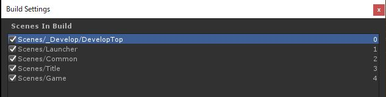

DevelopTopとLauncherの並びは変えてはいけない
DevelopTop
0:DevelopTop が開発用のデバッグ起動画面。
ここで接続サーバーの設定や起動シーンの選択を行う。
リリースビルド時に無効化することで 1:のLauncherが起動するようになる。
Launcher
通常の起動シーン。
ここでシステムの初期化などを行い、タイトル画面などに飛ばす
Common
全てのシーンで存在する共通インスタンスを置く場所。
シングルトンなオブジェクトを置くならここ。
Launcherシーンや後述のDebugAppLauncher等からロードされる。